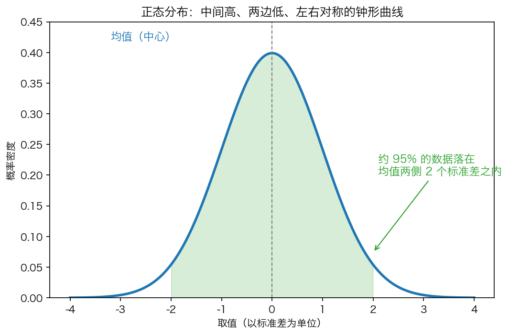
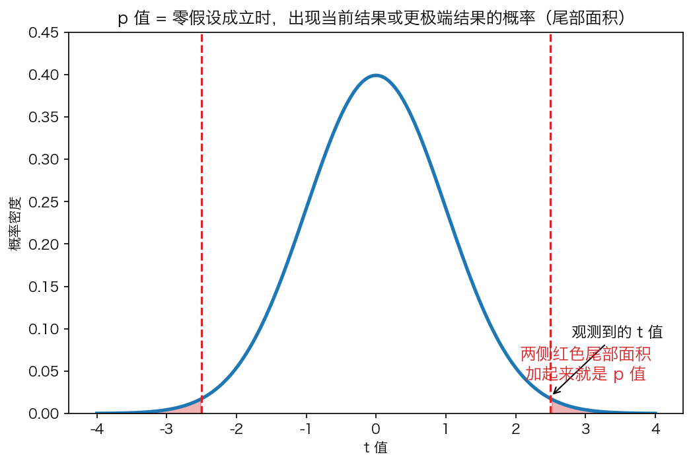
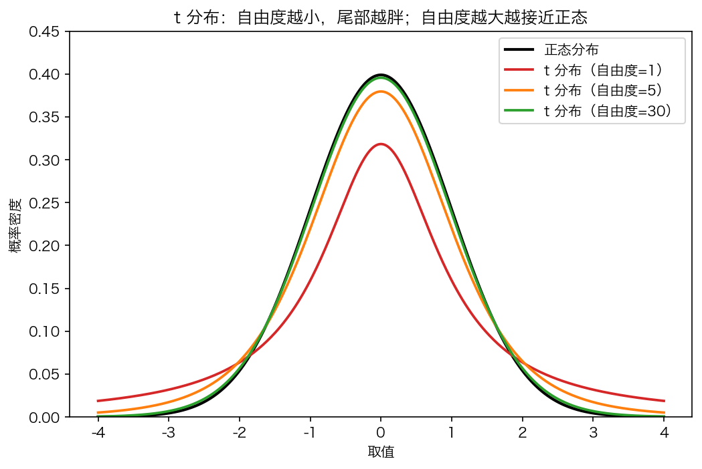
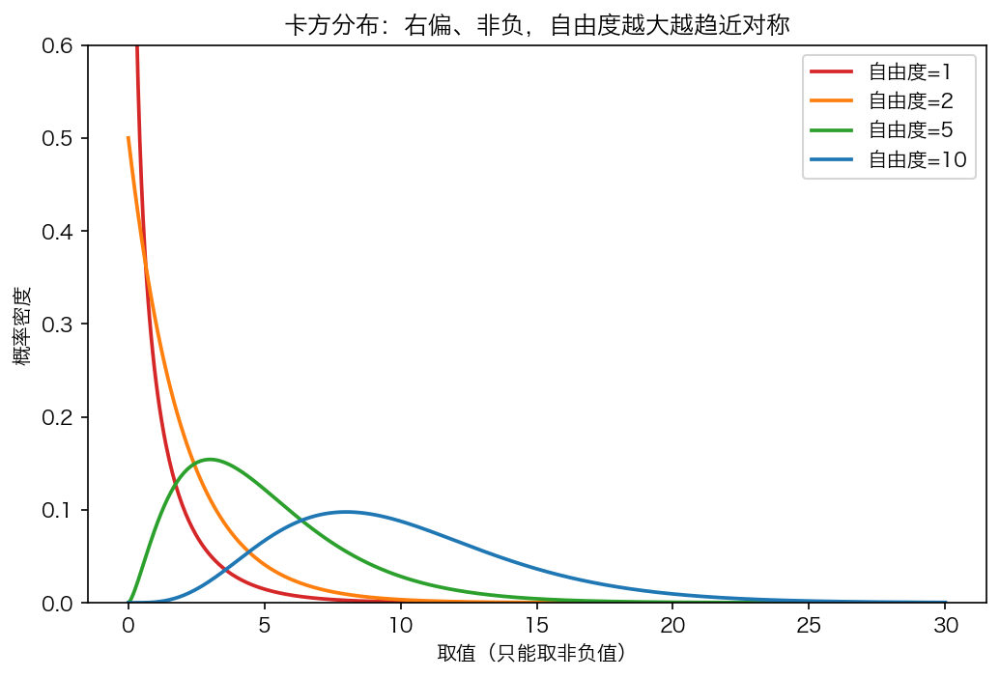
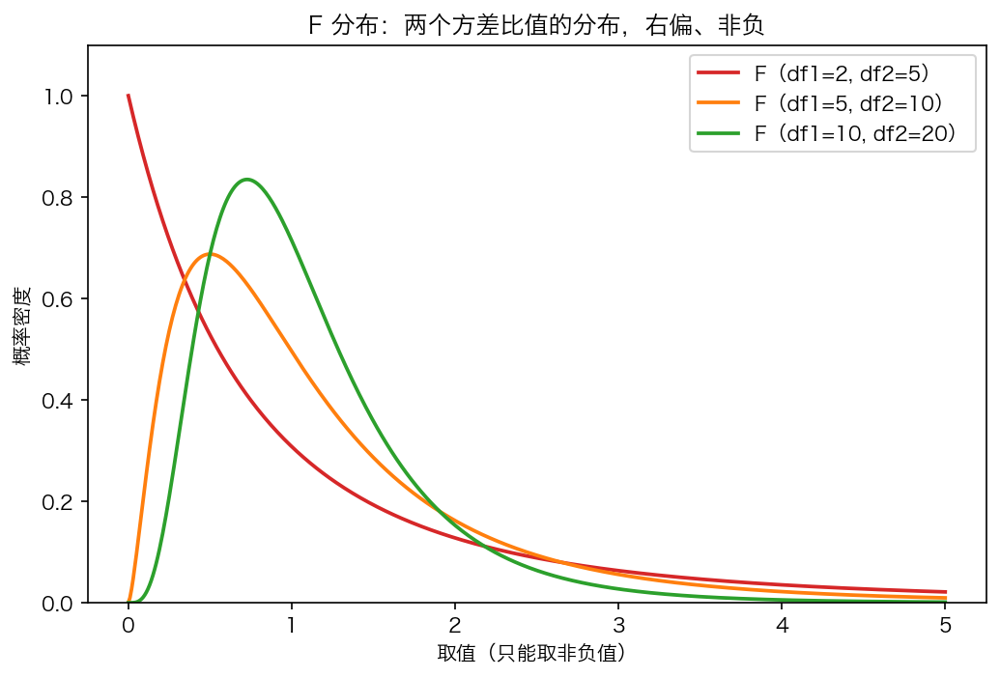

前阵子写《基础知识：初级统计概念的简单介绍》的时候，讲的是平均值、方差、标准差这些"描述性统计"——它们回答的问题是"这堆数据长什么样"。
这篇文章要讲的是另一套东西，回答的问题是"两组数据的差异，到底是真的，还是碰巧"——这就是推断统计，也就是统计检验。它是一套术语密集的概念系统：零假设、自由度、服从分布、t 分布、卡方分布、F 分布……每个词单拿出来都像黑话，放在一起更像天书。
这篇文章的目标，是把这些黑话全部翻译成人话。每讲一个概念，我会先用一个生活里的比方说清楚"它到底在干什么"，再给出直觉解释，最后补一段能直接跑的 Python 代码。读完你应该能看懂论文里"t(18) = 6.1, p < 0.001"或者"χ²(1, N=5924) = 11.50, p < 0.001"这种句子到底在说什么。
先给一张地图，后面每个概念都是这张图里的一块拼图：
总体（想知道但看不到全貌的一群人）
│ 抽样
样本（手里实际拿到的一小撮数据）
│ 计算
统计量（把样本压缩成几个数：均值、t 值、卡方值……）
│ 对照
分布（如果零假设成立，统计量本该落在哪里）
│ 算概率
p 值（实际落点有多"离谱"）
│ 下结论
拒绝 / 不拒绝零假设
一、总体与样本：为什么需要"推断"
先说一个大前提：你几乎永远看不到"总体"。
你想知道"全中国成年男性的平均身高"，但你不可能量遍每一个成年男性。你能量到的只是手里这一千个人的身高。这一千个人就是样本，全中国成年男性才是总体。
统计检验要干的，就是从样本出发，去推断总体的性质。因为看不到总体，所以所有的结论都是"带概率的猜测"——这就是为什么统计检验永远在谈概率、谈分布、谈"显著不显著"，而不是斩钉截铁地说"是"或"不是"。
二、统计量：用几个数，概括一堆数
统计量（statistic），说穿了就是"从样本数据里算出来的一个数"。
它的来源是样本——不是拍脑袋想出来的，是对手里的数据做加减乘除得到的。它的作用是概括：一千个身高数字没法直接给人看，但"平均身高 172 厘米"一个数就能说明很多问题。
常见的统计量分两类：
| 类型 | 例子 | 回答的问题 |
|---|---|---|
| 描述性统计量 | 均值、方差、中位数 | 这堆数据长什么样 |
| 检验统计量 | t 值、卡方值、F 值 | 差异/偏离有多大，是否显著 |
描述性统计量上一篇讲过，这篇文章重点是检验统计量。它的定义有点绕，但可以先记住一句话：
检验统计量，就是把"你观察到的差异或偏离"浓缩成一个数，好拿去和"纯偶然能产生的波动"做比较。
比如 t 值，本质是个"信噪比"：分子是信号（两组均值差多少），分母是噪声（抽样自然波动多大）。t 值大，说明差异明显盖过了随机波动，这差异就可能是真的。
from scipy import stats
import numpy as np
# 两组各 20 人的成绩
control = np.random.normal(70, 10, 20) # 对照组，平均 70
experiment = np.random.normal(78, 10, 20) # 实验组，平均 78
t_value, p_value = stats.ttest_ind(experiment, control, equal_var=False)
print(f"t 值 = {t_value:.3f}")
print(f"p 值 = {p_value:.4f}")
t 值 = 2.587
p 值 = 0.0139
这个 t = 2.587 就是一个检验统计量。它本身只是个数字，它的意义要放到"分布"里才能解释——这正是下一节的内容。
三、服从分布：数据的"落点规律"
"服从分布" 这个词，是所有黑话里最唬人的一个。把它翻译成人话就是：
数据不是乱来的，它们落在不同取值上的可能性是有规律的。这个规律，就叫分布。
举个最直观的例子。你去校门口量 1000 个路人的身高，然后把身高分成很多小段（160-162 一段，162-164 一段……），数每个小段有多少人，画成直方图。你会看到：中间段人最多，越往两边人越少，整个形状像一口钟。这就是"身高服从正态分布"的意思——不是说每个人都是平均身高，而是说身高的落点遵循一条钟形曲线。
"服从分布"的严格说法是：一个随机变量的取值，可以用某条概率密度曲线（或某个概率表）来描述。曲线越高的地方，取值落在那里的可能性越大。
import matplotlib.pyplot as plt
import numpy as np
# 模拟 1000 个"服从正态分布"的身高数据
heights = np.random.normal(172, 7, 1000)
plt.hist(heights, bins=30, density=True, alpha=0.6, color="#1f77b4")
plt.xlabel("身高（cm）")
plt.ylabel("频率密度")
plt.title("1000 个身高的直方图：中间多、两边少，接近钟形")
直方图的形状，就是我们常说的"分布的形状"。为什么统计检验这么在乎分布？因为——
只有知道了"如果纯属偶然，这个统计量会落在哪里"，你才能判断"眼前这个落点是不是太离谱了"。
换句话说，分布是统计检验的"裁判规则书"。下面几节讲的 t 分布、卡方分布、F 分布，就是三种不同的裁判规则书。
四、正态分布：统计世界的"默认设置"
在讲那三个分布之前，必须先讲正态分布（normal distribution），因为另外三个分布要么从它派生，要么拿它当参照。
正态分布长这样：

它的形状特征，一句话：中间高、两边低、左右对称的钟形。两个参数决定它：
- 均值 μ：钟顶在哪（中心位置）；
- 标准差 σ：钟有多胖（数据的离散程度）。
它最著名的性质是"68-95-99.7 法则"：
- 大约 68% 的数据落在 均值 ± 1 个标准差 之内；
- 大约 95% 落在 均值 ± 2 个标准差 之内；
- 大约 99.7% 落在 均值 ± 3 个标准差 之内。
为什么正态分布是"默认设置"？两个原因：
- 自然界太多东西近似正态：身高、体重、测量误差……大量微小随机因素叠加的结果，往往就是正态分布（这就是中心极限定理）。
- 抽样均值的分布，无论原始数据长什么样，只要样本够大，就趋近正态。这是统计检验能成立的地基。
所以课件里反复强调"以下方法全部假定数据服从正态分布"——因为 t 检验、ANOVA 这些方法，都是建立在这个假设之上的。
五、零假设与备择假设：先假定"没事"，再找证据反驳
零假设（null hypothesis，记作 H₀），是统计检验里最核心也最容易理解反的一个概念。
它跟法院的无罪推定一模一样：开庭之前，先假定被告无罪。要判他有罪，控方必须拿出足够强的证据，强到"被告要是真无罪，不可能出现这种证据"的程度。
统计检验完全照搬这个逻辑：
- 零假设 H₀：先假定"没有差异 / 没有关联 / 没有效果"。比如"两组平均身高没有差异"。
- 备择假设 H₁：零假设的反面。比如"两组平均身高有差异"。
注意两个容易搞错的地方：
- 零假设不是你想证明的结论，恰恰是你想"推翻"的靶子。检验的目标是看证据够不够强，强到能把"没有差异"这个默认状态推翻。
- 检验的结论只有两种：要么"拒绝零假设"（证据够强，有显著差异），要么"不拒绝零假设"（证据不够，不能下结论有差异）。注意是"不拒绝"，不是"接受"——就像法院判"证据不足、无罪释放"不等于"证明他真是个好人"。
# 零假设 H0：两组均值相等（μ1 = μ2）
# 备择假设 H1：两组均值不相等（μ1 ≠ μ2）
#
# t 检验做的事：在 H0 成立的前提下，算出现当前差异的概率（p 值）。
# 若 p 值太小（比如 < 0.05），说明"H0 成立时不该出现这么大差异"，
# 于是我们拒绝 H0，认为差异显著。
一句话总结：
零假设 = 无罪推定 = 默认没有差异。统计检验 = 找证据，看能不能把这个默认状态推翻。
六、p 值与显著性水平：证据要强到什么程度
有了零假设，下一个问题就是：差异大到什么程度，才算"够强"？
p 值（p-value） 的严格定义是：
在零假设成立的前提下，观察到"当前结果或更极端结果"的概率。
把它翻译成人话：如果两组真的没有差异，纯靠偶然，出现我们看到的这个差异（甚至更大的差异）的概率有多大？

- p 值大（比如 0.6）："没差异"也能轻轻松松产生这么大的波动，所以没有理由怀疑零假设。
- p 值小（比如 0.001）："没差异"的话，出现这么大差异的概率只有千分之一，太离谱了，所以有理由认为差异是真的。
那"多小算小"？这就是显著性水平 α（significance level），通常取 0.05。它是一条人为划的红线：
- p < α（比如 p < 0.05）→ 拒绝零假设 → 结果"显著"；
- p ≥ α → 不拒绝零假设 → 结果"不显著"。
论文里常见的星号就是这么来的：* = p<0.05，** = p<0.01，*** = p<0.001，星越多证据越强。
from scipy import stats
# t = 2.5，自由度 18，算双尾 p 值
t_obs = 2.5
p = stats.t.sf(t_obs, 18) * 2 # sf = survival function，即右尾面积；×2 是双尾
print(f"t = {t_obs}, p = {p:.4f}")
print("p < 0.05" if p < 0.05 else "p >= 0.05")
t = 2.5, p = 0.0223
p < 0.05
p 值最大的坑：它对样本量极度敏感。样本一大，再微不足道的差异也能给出极小的 p 值。所以 p 值只回答"差异是否可检测到"，不回答"差异有多大"——后者要靠效应量（后面第 9 节讲）。
七、自由度：能自由变动的数据点个数
自由度（degrees of freedom，简称 df），是被问得最多的概念，也是最值得用直觉先打通的一个。
最直白的定义：
自由度 = 在给定了某些约束之后，还能自由变动的数据点个数。
一个经典例子。三个数，已知它们的平均值是 10：
- 第 1 个数可以随便选，比如 8；
- 第 2 个数也可以随便选，比如 12；
- 第 3 个数就被锁死了——必须是 10，否则均值就不是 10 了。
所以这三个数里，真正自由的只有 2 个，自由度 = 3 - 1 = 2。那个被减掉的 1，就是"均值"这个约束消耗掉的一个自由度。
这就是样本方差公式里除以 n-1 而不是 n 的来历：算样本方差时，你已经先算了一次样本均值，用掉了一个自由度，所以剩下的自由度是 n-1。
# 三个数，均值锁定为 10
# 前两个可以自由选，第三个被锁定
a, b = 8, 12
c = 3 * 10 - a - b
print(f"a={a}, b={b} 自由选择后，c 被锁死为 {c}")
print(f"自由度 = 3 - 1 = 2")
a=8, b=12 自由选择后，c 被锁死为 10
自由度 = 3 - 1 = 2
为什么自由度这么重要？因为它决定分布的形状。t 分布、卡方分布、F 分布的形状都随自由度变化。自由度小，说明"信息少、估计不稳"，对应的分布就更胖、更保守。
几个常见的自由度：
| 场景 | 自由度 |
|---|---|
| 单样本 t 检验 | n - 1 |
| 独立两样本 t 检验 | n₁ + n₂ - 2 |
| 卡方检验（2×2 表） | 1 |
| 卡方检验（r×c 表） | (r-1)(c-1) |
| 单因素 ANOVA（组间） | k - 1 |
| 单因素 ANOVA（组内） | N - k |
八、t 分布：小样本均值的"谨慎版"正态
现在讲第一个"裁判规则书"：t 分布。
回忆一下：t 值 = 均值差 ÷ 均值差的标准误。问题来了——当样本量很小时，我们连"标准误"都估不准，于是 t 值的落点就比标准正态更不确定。
t 分布就是用来描述这种"小样本下的不确定性"的分布。它长得像正态分布，但：
- 自由度越小，尾部越胖——因为样本少、信息不足，极端值出现的概率比正态高，判断要更保守；
- 自由度越大，越接近标准正态分布——样本多了，估得准了，就退回正态。

看这张图：df=1 的 t 分布（红线）尾巴明显比正态（黑线）厚得多，df=30（绿线）已经几乎和正态重合了。
from scipy import stats
# 同样落在 x=3 的位置，df 越小，尾部概率越大
for df in [1, 5, 30, 1000]:
print(f"df={df:>4} P(X>3) = {stats.t.sf(3, df):.4f} 正态分布 P(X>3) = {stats.norm.sf(3):.4f}")
df= 1 P(X>3) = 0.1024 正态分布 P(X>3) = 0.0013
df= 5 P(X>3) = 0.0150 正态分布 P(X>3) = 0.0013
df= 30 P(X>3) = 0.0027 正态分布 P(X>3) = 0.0013
df=1000 P(X>3) = 0.0014 正态分布 P(X>3) = 0.0013
看到没：同样落在 x=3 这个"极端"位置，df=1 时概率是 0.1024（不算罕见），df=1000 时是 0.0014（很罕见了）。这就是"样本越小，越要谨慎"的数学表达。
t 分布用在什么时候：比较两组均值（t 检验）。论文里的 t(18) = 6.1, p < 0.001，意思就是"自由度为 18 的 t 检验，检验统计量 t=6.1，p 值小于 0.001"。
九、效应量：差异"有多大"，而不是"有没有"
p 值回答"差异是否真实存在"，但它不回答"差异有多大"。一个身高差 0.1 厘米的差异，样本够大时也能 p<0.001，但 0.1 厘米没有任何实际意义。
效应量（effect size） 就是来补这个洞的。它把"差异的绝对大小"用标准化的方式表达出来，让人一眼看出差异是否"值得一提"。
最常用的效应量是 Cohen's d：
d = (两组均值差) / (合并标准差)
经验判断：d ≈ 0.2 是小效应，0.5 是中等，0.8 是大效应。
import numpy as np
control = np.random.normal(70, 10, 50)
experiment = np.random.normal(74, 10, 50)
mean_diff = experiment.mean() - control.mean()
pooled_sd = np.sqrt((np.std(control, ddof=1)**2 + np.std(experiment, ddof=1)**2) / 2)
d = mean_diff / pooled_sd
print(f"均值差 = {mean_diff:.2f}，合并标准差 = {pooled_sd:.2f}")
print(f"Cohen's d = {d:.3f}")
均值差 = 4.12，合并标准差 = 9.98
Cohen's d = 0.413
论文报告规范通常是：既要报 p 值（有没有差异），也要报效应量（差异有多大）。只报 p 值是外行做法。
十、卡方分布：偏离程度的分布
卡方检验用来处理分类数据——不是身高这种连续数字，而是"及格/不及格""是/否""类别 A/B/C"这种数人头的计数。
卡方值衡量的是：观测频数（实际数到的人数）和期望频数（零假设成立时"应该"数到的人数）偏离了多少。
χ² = Σ (观测频数 - 期望频数)² / 期望频数
偏离得越厉害，卡方值越大。而这个卡方值"纯靠偶然会落在哪里"，由卡方分布描述。
卡方分布的形状特点：
- 只能取非负值（因为平方项都是正的）；
- 右偏（长长的右尾巴），自由度越大越趋近对称。

一个经典例子（来自课件）：两个作文题目，统计"人"这个词的词频，判断"人"的词频是否和题目有关联。
| 题目A | 题目B | 合计 | |
|---|---|---|---|
| 人 | 114 | 27 | 141 |
| 其他名词 | 863 | 945 | 1808 |
| 合计 | 977 | 972 | 1949 |
import numpy as np
from scipy import stats
observed = np.array([[114, 27],
[863, 945]])
chi2, p, dof, expected = stats.chi2_contingency(observed, correction=True)
print(f"χ² = {chi2:.2f}, df = {dof}, p = {p:.3e}")
print("期望频数：")
print(expected)
χ² = 56.07, df = 1, p = 6.992e-14
期望频数：
[[ 70.68 70.32]
[906.32 901.68]]
χ² = 56.07，p 小到 6.99×10⁻¹⁴，说明"人"的词频和题目有极强的关联——两个题目里"人"的使用确实不一样。
卡方分布用在什么时候：分类变量的关联性检验。论文里的 χ²(1, N=5924) = 11.50, p < 0.001，意思就是"自由度为 1 的卡方检验，样本量 5924，卡方值 11.50"。
十一、F 分布：方差比值的分布
当你要同时比较三组及以上的均值差异时，t 检验不够用了（它只能比两组），这时上 ANOVA（方差分析），用的检验统计量是 F 值。
F 值的设计思路特别巧妙。它把"差异"拆成两半：
F = 组间差异（信号） / 组内差异（噪声）
- 组间差异：各组均值之间的高低不同——这是你想找的"信号"；
- 组内差异：同一组内部个体的自然波动——这是"噪声"。
如果组间差异大、组内差异小，F 就大，说明组与组之间的区别明显盖过了随机噪声，差异是真的。如果 F 接近 1，说明信号完全淹没在噪声里。
F 值的落点，由 F 分布 描述。它有两个自由度：一个来自组间（分子），一个来自组内（分母）。

F 分布的形状和卡方很像：非负、右偏。有两个自由度（df1 和 df2），分别对应分子和分母。
课件里那个手工算 F 的小例子，把公式拆得很清楚：
| 组 | 观测值 | 均值 |
|---|---|---|
| A | 8, 10, 12 | 10 |
| B | 4, 6, 8 | 6 |
| C | 6, 8, 10 | 8 |
import numpy as np
from scipy import stats
A = np.array([8, 10, 12])
B = np.array([4, 6, 8])
C = np.array([6, 8, 10])
grand = np.concatenate([A, B, C]).mean()
ss_between = sum(len(g) * (g.mean() - grand)**2 for g in (A, B, C))
ss_within = sum(((g - g.mean())**2).sum() for g in (A, B, C))
k, N = 3, 9
msb = ss_between / (k - 1) # 组间均方，自由度 k-1
msw = ss_within / (N - k) # 组内均方，自由度 N-k
F = msb / msw
p = stats.f_oneway(A, B, C).pvalue
print(f"SS组间={ss_between}, SS组内={ss_within}")
print(f"MSB={msb}, MSW={msw}")
print(f"F = {F:.1f}, p = {p:.4f}")
SS组间=24.0, SS组内=24.0
MSB=12.0, MSW=4.0
F = 3.0, p = 0.1250
F = 3.0，p = 0.125 > 0.05，所以不能拒绝零假设——这三组的均值差异不足以被证明是真实的。
F 分布用在什么时候：三组及以上均值比较（ANOVA）、以及很多模型的整体显著性检验。
十二、第一类错误与第二类错误：检验也会犯错
统计检验是基于概率的，所以它天然会犯两种错：
| 错误类型 | 是什么 | 类比 |
|---|---|---|
| 第一类错误（α） | 零假设其实成立，你却拒绝了它——"误判有罪" | 冤枉好人 |
| 第二类错误（β） | 零假设其实不成立，你却没拒绝它——"漏判有罪" | 放走坏人 |
显著性水平 α 就是你自己设定的第一类错误上限：α=0.05 意味着你愿意接受"最多 5% 的概率冤枉好人"。
两者之间存在跷跷板关系：α 定得越小（越不容易误判有罪），就越容易放走坏人（第二类错误越大）。这就是为什么 α 不是越小越好，0.05 是学界在两者之间取的一个平衡。
# 第一类错误的直觉：即使零假设成立，纯抽样波动也可能让 p 偶尔 < 0.05
import numpy as np
from scipy import stats
np.random.seed(0)
false_positives = 0
for _ in range(1000):
a = np.random.normal(70, 10, 30) # 两组其实来自同一总体（无差异）
b = np.random.normal(70, 10, 30)
_, p = stats.ttest_ind(a, b)
if p < 0.05:
false_positives += 1
print(f"1000 次'无差异'检验中，误报显著的次数：{false_positives}（约等于 α × 1000）")
1000 次'无差异'检验中，误报显著的次数：52（约等于 α × 1000）
两组数据明明来自同一个总体（确实没有差异），但 1000 次检验里仍有约 52 次"误报显著"——这就是 5% 的第一类错误在真实发生。
十三、前提假设：这些方法为什么"有条件"
课件反复强调，t 检验、ANOVA 都建立在一些前提假设上，不满足这些假设，结论就不可靠：
1. 正态性（normality） 每组数据应大致服从正态分布。样本量大时（每组 ≥ 30）相对稳健；但相对频率这种数据常常严重偏态，需要警惕。
2. 方差齐性（homogeneity of variance）
各组方差应大致相等。可以用 Levene 检验判断；不齐时用 Welch 修正（我们前面 t 检验用的 equal_var=False 就是 Welch 修正）。
3. 观测独立性（independence） 每个观测相互独立，不重复测量同一对象。文本分析里，每篇文章算一个独立样本。
4. 期望频数（卡方特有） 卡方检验里，列联表每个格子的期望频数不宜过小（通常需 > 5），否则卡方近似不成立。
这些假设如果严重不满足怎么办？答案是换非参数检验。
十四、非参数检验：不依赖正态分布的备胎
非参数检验，就是那些"不要求数据服从正态分布"的方法。
最典型的是 Kruskal-Wallis 检验，它是 ANOVA 的非参数版本。ANOVA 要求正态、方差齐，Kruskal-Wallis 只要求独立——它不直接用原始数值，而是把数值换成排名（秩）再比较，因此对偏态、异常值都不敏感。
课件的实战建议很实用：
先跑 ANOVA 看分布，偏态严重就换 Kruskal-Wallis；卡方只在你只想用组级计数时用。
from scipy import stats
import numpy as np
# 三组严重偏态的数据（不满足正态假设）
A = np.random.exponential(1, 30)
B = np.random.exponential(1.5, 30)
C = np.random.exponential(2, 30)
f, p_anova = stats.f_oneway(A, B, C) # ANOVA（假设正态）
h, p_kw = stats.kruskal(A, B, C) # Kruskal-Wallis（非参数）
print(f"ANOVA: F={f:.3f}, p={p_anova:.4f}")
print(f"Kruskal-Wallis: H={h:.3f}, p={p_kw:.4f}")
ANOVA: F=5.916, p=0.0038
Kruskal-Wallis: H=15.94, p=0.0003
偏态数据下，非参数的 Kruskal-Wallis 往往比 ANOVA 更稳健。
十五、事后比较：ANOVA 显著了，然后呢？
ANOVA 有一个"先天不足"：它只告诉你"至少有一组和别人不同"，但不告诉你是哪两组。
要定位具体差异，需要事后比较（post-hoc test），最常用的是 Tukey HSD。它的思路是：一次性地校正所有两两比较，把"误报"的总概率锁回到 α，避免你连续做一堆 t 检验导致第一类错误累积。
from statsmodels.stats.multicomp import pairwise_tukeyhsd
import numpy as np
np.random.seed(1)
vals = np.concatenate([
np.random.normal(10, 2, 20), # A 组
np.random.normal(12, 2, 20), # B 组
np.random.normal(13, 2, 20), # C 组
])
groups = np.array(["A"]*20 + ["B"]*20 + ["C"]*20)
res = pairwise_tukeyhsd(vals, groups, alpha=0.05)
print(res.summary())
Tukey HSD 会输出每一对的均值差、校正后的 p 值，以及"是否显著"（reject=True/False）。这样你就知道到底哪两组之间有真实差异。
十六、一张表收尾
把整篇文章的脉络收进一张表，方便查阅：
| 概念 | 人话解释 |
|---|---|
| 总体 / 样本 | 想知道的全体 vs 手里拿到的一小撮 |
| 统计量 | 从样本算出来、用来概括或检验的那个数 |
| 服从分布 | 数据落点遵循的规律（钟形、右偏……） |
| 正态分布 | 中间高两边低的钟形，统计的"默认设置" |
| 零假设 H₀ | 无罪推定：先默认"没有差异" |
| 备择假设 H₁ | 零假设的反面："有差异" |
| 检验统计量 | 把差异/偏离浓缩成的那个数（t、χ²、F） |
| p 值 | 零假设成立时，出现当前结果的概率 |
| 显著性水平 α | 判死刑的红线，通常 0.05 |
| 自由度 df | 还能自由变动的数据点个数 |
| t 分布 | 小样本均值的分布，df 越小尾巴越胖 |
| 卡方分布 | "偏离程度"的分布，非负、右偏 |
| F 分布 | "方差比值"的分布，非负、右偏 |
| 效应量 | 差异有多大（不只是有没有） |
| 第一类错误 | 冤枉好人（无差异却报显著） |
| 第二类错误 | 放走坏人（有差异却没查出来） |
| 非参数检验 | 不要求正态的备胎（Kruskal-Wallis） |
| Tukey HSD | ANOVA 显著后，定位具体哪两组不同 |
最后
统计检验这套术语，本质上是一个反证法的流水线：
- 先假定"没有差异"（零假设）；
- 把观察到的差异浓缩成一个数（检验统计量）；
- 对照"纯偶然时这个数该落在哪里"（分布）；
- 算"出现这么离谱结果的概率"（p 值）；
- 概率够小就推翻零假设，不够小就维持原判。
理解了这条流水线，t 检验、卡方检验、ANOVA 的区别就只剩下"用什么统计量、对照什么分布"——而这两点，本文都讲过了。剩下的就是多读几篇带统计结果的论文，看到 t(18)=6.1、χ²(1)=11.50、F=16.96 这些符号时，能条件反射地知道它们在说什么。